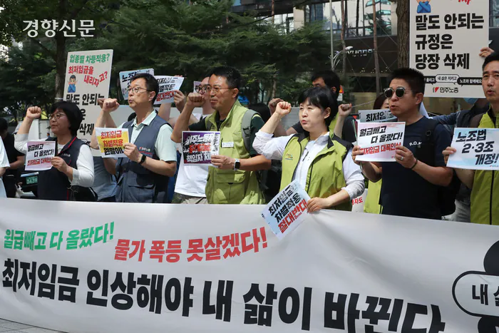
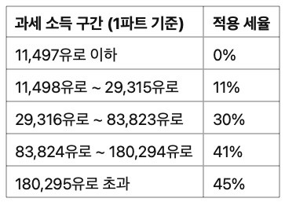
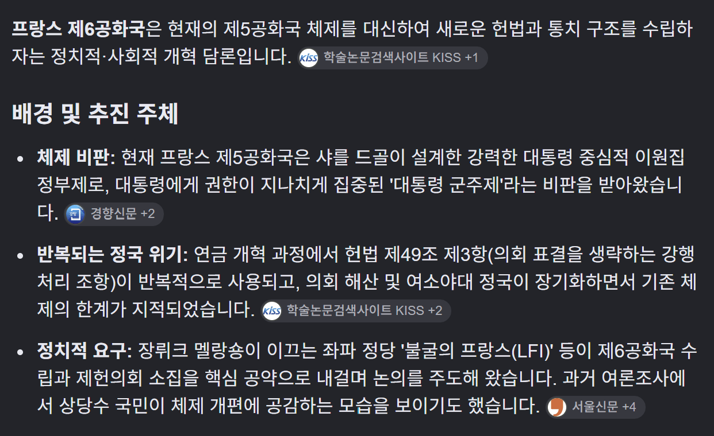

현재 프랑스 대선 후보 2위
극좌 성향 장 뤼크 멜랑숑
어제 멜량숑의 공약들이
1500만 조회수를 기록하며 엄청난 관심
1. 의사 진료 없이 3일 병가 허용
단기 병가에 대해 의사 진료 없이 본인이 신고하는 방식 도입
2. 친구 사망시 7일 유급휴가
친구를 포함한 가까움 사람이 사망했을때 휴가를 인정하는 정책
(7일이라는 기간은 아직 검증X)
3. 최저 임금 월 1700유로 순수령액

최저 임금 15% 인상
4. 정년 64세 개혁 폐기후 60세로 단축
5. 주 32시간 근무제 도입
-법정 근로시간을 즉시 주 35시간으로
-육체적으로 힘든 직종과 야간근무 직종은 주 32시간으로 단
6. 25세 미만 의무 환경복무 9개월
군복무가 아니라 기후변화와 환경위기에 대응하기 위한 사회적 노동을 수행을 실시하고
최저임금 수준의 보수를 지급
7. 의료비 100% 사회보장보험 환급
-처방된 의료서비스의 전액 환급
-민간 건강보험을 사회보장체계에 통합
-의료비 자기부담금 폐지
8. 26세 미만 심리치료 비용 지원
9. 상속액 1,200만 유로 상한
상속과 생전 증여를 개인의 평생 누적 기준으로 계산해 1,200만 유로로 제한
1,200만 유로를 초과하는 부분은 상속 불가
10. 주거보조금 10% 인상
11. 필수품 가격 통제
12. 공무원 임금 인상
10%인상
13. 청년 최저소득 보장수당
14.대학생 1유로 식사 제공
15. 기업 내부 최고, 최저 임금 격차 1:20 제한
최저임금이 연간 2만 유로면
최고 임금은 40만 유로를 넘지 못하게 강제
16. 기업에 대한 정부 지원금에 사회/환경 조건 부과
17. 부유세 부활
2018년 폐지했던 부유세 부활
18. 주크만세 도입
1억 유로 이상 자산을 보유한 초고액 자산가에게
전체 자산의 최소 2%에 해당하는 세금을 부과
19. 소득세 과세구간 14단계로 확대

고소득자 세금 더 확대(누진세 강화)
20. 원자력 발전의 단계적 폐지
21. 오후 11시~ 오전 6시 항공편 금지
22. 제 6공화국으로 전환

23. 헌번 49.3 조 폐지
정부가 특정 법안에 대해 의회의 일반적인 표결을 거치지 않고
법안을 통과시킬 있도록 하는 제도 폐지
24. 경찰의 차별행위 대응 강화
25. 1961년 알제리인 학살을 국가범죄로 인정
26. EU 조약 재협상 및 일부 규정 불복종
EU의 자유로운 상품 및 자본 이동 규칙에 대한 재검토
EU 자유무역협정에 대한 재검토
프랑스 국내 정책 우선 적용, 필요시 EU 규정 불복
27. 나토 통합군사령부 탈퇴 및 나토 단계적 탈퇴
나토 통합군사령부에서 즉시 탈퇴
나토 조직 자체에세 단계적으로 탈퇴
# 구라 아니고 언론기사,공약집,GPT/제미나이로 확인된 사실
포퓰리즘 어휴